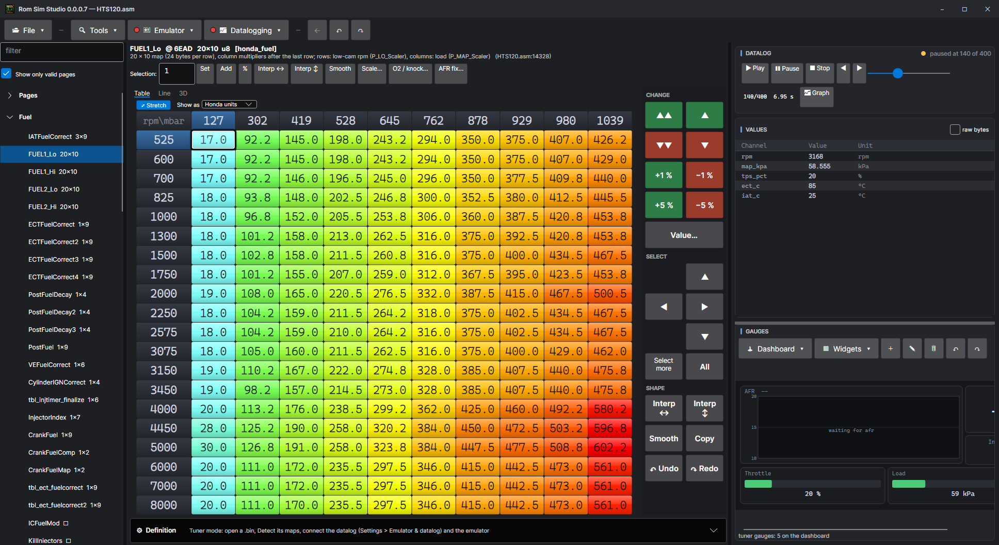

Simulator and Tuner modes
One program, two layouts. The ROM, its definitions and the datalog are the same in both: switching only changes what is on screen.
Simulator mode — the workbench

For writing and changing the ROM. The source is in the middle with the tabs below it (Problems, Trace, Memory, Calibration, Lookup & breakpoints, Datalog, Debug); the chip and the engine inputs are on the left; the CPU, call stack, disassembly, outputs and ports on the right. See the workbench.
Tuner mode — the calibration editor

For tuning a car. The calibration editor fills the window with its Tools, Emulator and Datalogging menus on the top line, and the datalog (gauges, graph, parameters) sits on the right. The source, the disassembly and the debugger are put away, and what they held is let go so a small laptop has its memory for the datalog. See tables and settings.
In Tuner mode the program puts datalogging first: the frames are read on a thread of their own at a higher priority, and the live cell on the map is drawn from the same frame the gauges show, so the cell you are editing is the cell the engine is in.
Switching
- File > Tuner mode or File > Simulator mode, or Ctrl+T.
- Settings > General > Tuner mode sets which one the program opens in.
RomSimTuner — Tuner mode on its own
romsimtuner.zip on the website is a second program, RomSimTuner: what Tuner mode shows, built from the same source files, with no simulator, MCP server or plugins. It opens a .bin or a build file, finds the maps, datalogs, drives the emulator, checks the checksum and saves, like Tuner mode. It needs only the .NET 10 runtime and keeps its own settings (tuner-settings.json; the first time it starts it takes Rom Sim Studio's). Its updates come from their own list on the website: Settings > Updates, and a check a few seconds after it opens.
Touch screen mode

For a tablet or a touch screen beside the car: Settings > General > Touch screen mode sizes the controls for a finger across the whole program and puts a pad of big buttons beside the tables: up and down one or ten steps or by 1 % and 5 %, a keypad for a value, arrows to move and grow the selection, interpolate across or down, smooth, copy, undo and redo. Every button does exactly what its key does, so a keyboard still works too.
Low performance mode
Settings > General > Low performance mode is for an old laptop (it is suggested on a machine with two cores or little memory). The side panels refresh less often, the drawing effects are dropped, and in Tuner mode the source text is parked out of the editor. The datalog and the live cell keep their full rate.